Primeros pasos con GWR
Regresión geográfica ponderada · Día 1
Hoja de ruta
- Motivación: cuándo una relación global no alcanza
- GWR dentro de los modelos espaciales
- Kernel espacial y matriz de pesos
- Selección de bandwidth (AICc / CV)
- GWR más allá de R: panorama de herramientas
- Implementación de GWR en
R:GWmodel - Cierre
Motivación
Ejemplo 1: Las Rosas, 1999
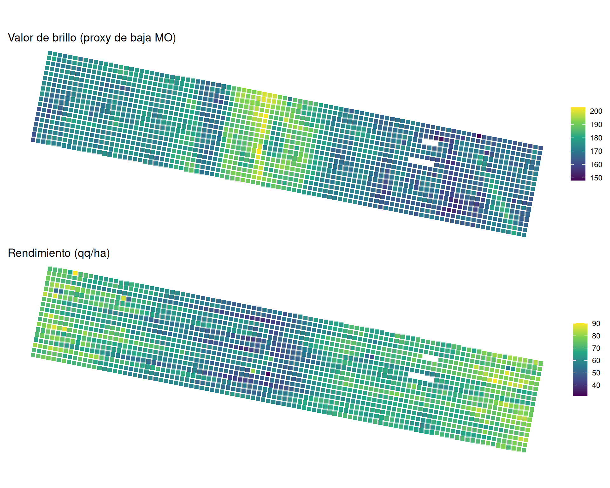
Modelo global: \(y_i = \beta_0 + \beta_1 \, x_{i1} + \varepsilon_i\)
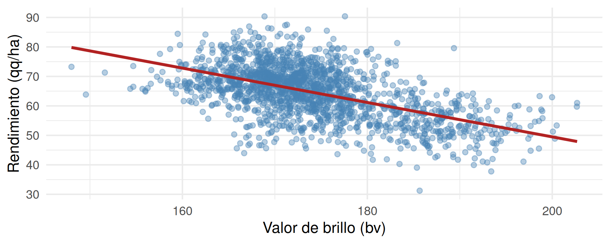
- A mayor brillo, menos rendimiento (R² ~ 30%). Pendiente global -0.58
¿Es estacionaria?
¿La relación yield ~ bv es única en todo el lote o varía según la ubicación?
Ejemplo 1: Las Rosas, 1999
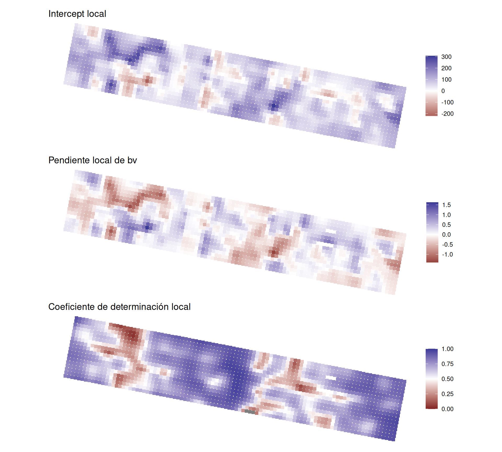
Modelo local: \(y_i = \beta_0(s_i) + \beta_1(s_i) \, x_{i1} + \varepsilon_i\)
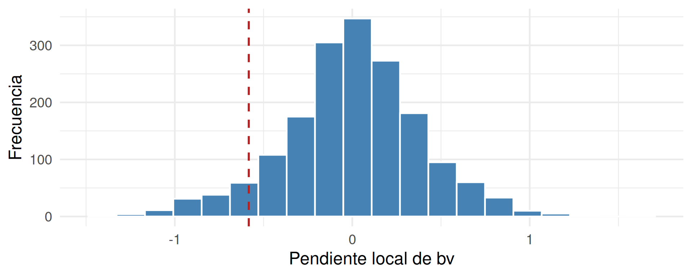
Coeficiente local de
bvva de -1.41 a +1.63, en algunas zonas más materia orgánica se asocia a más rendimiento, en otras a menos.La bondad de ajuste es variable, en algunas zonas ajusta mejor que en otras.
Ejemplo 2: participación electoral (DubVoter)
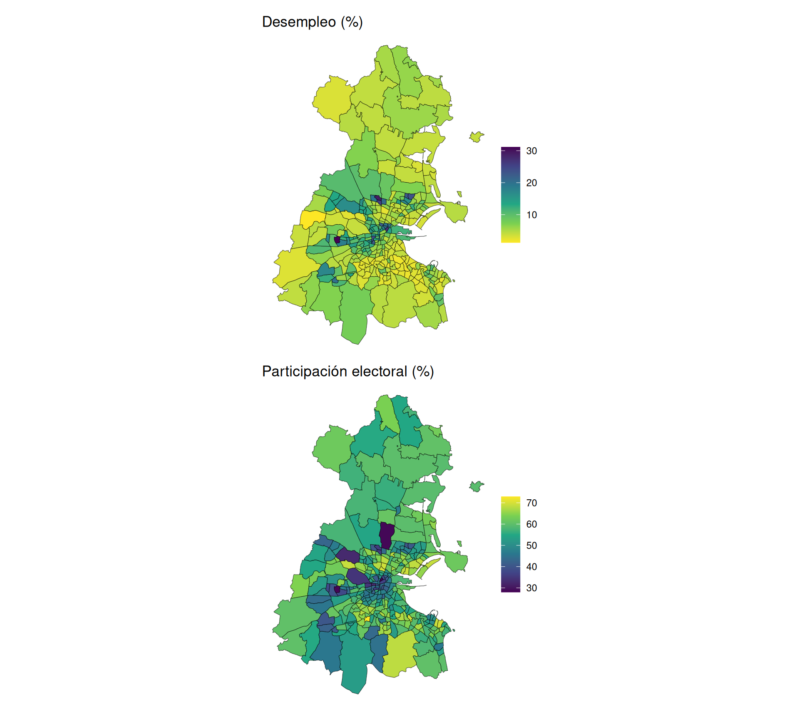
Modelo global: \(y_i = \beta_0 + \beta_1 \, x_{i1} + \varepsilon_i\)
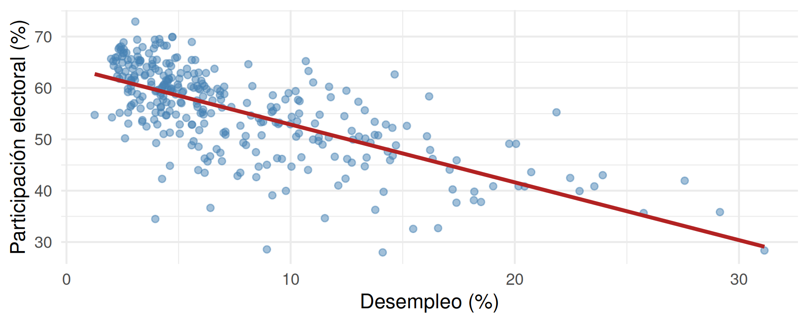
- Relación negativa entre desempleo y participación electoral: R² global ~ 47%, pendiente global -1.12.
¿Es estacionaria?
¿Esta relación es igual de fuerte en todo Dublín, o hay distritos donde el desempleo pesa mucho más que en otros?
Ejemplo 2: participación electoral (DubVoter)
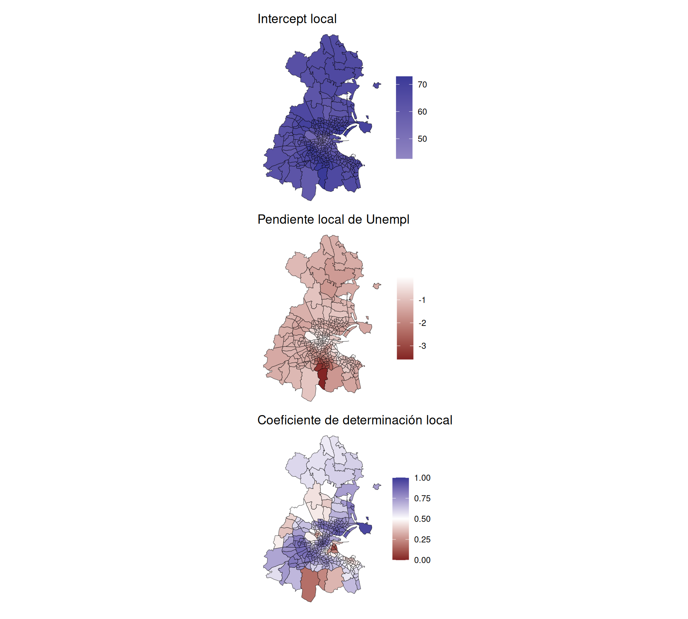
Modelo local: \(y_i = \beta_0(s_i) + \beta_1(s_i) \, x_{i1} + \varepsilon_i\)
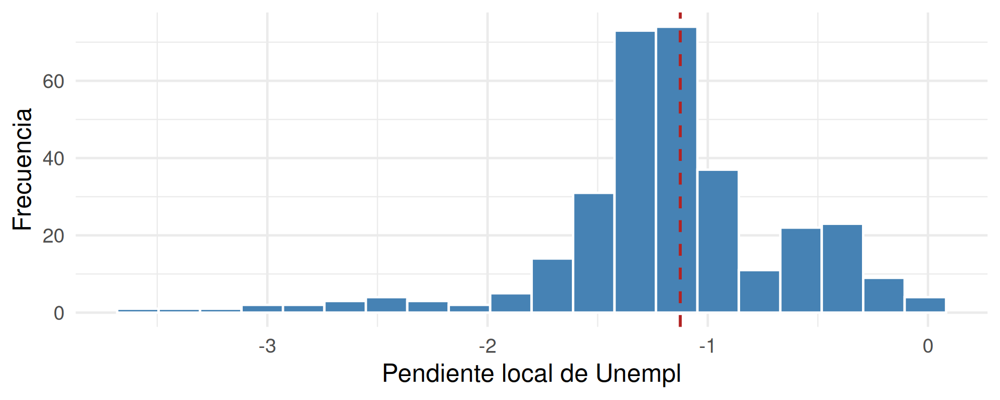
El coeficiente local de
Unemples negativo en 322 de los 322 distritos, pero varía mucho en magnitud (-0.01 a -3.59).La relación global no es pareja en el espacio, hay distritos donde el desempleo es mucho más determinante que en otros.
Ejemplo 3: nivel educativo en Georgia (multivariado)
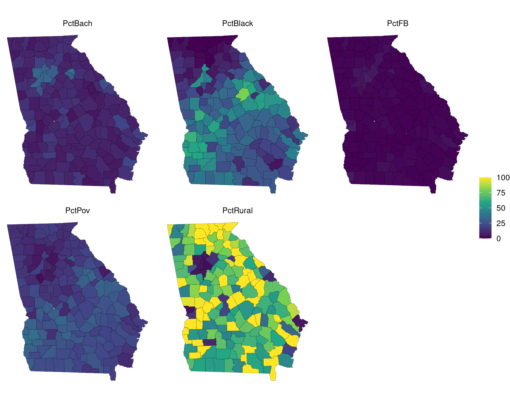
Modelo global (múltiple): \(y_i = \beta_0 + \sum_{j=1}^{k} \beta_j x_{ij} + \varepsilon_i\)
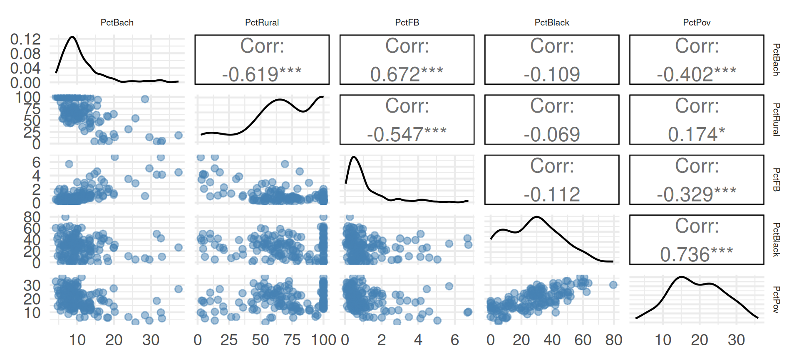
¿Son todas estacionarias?
¿Cada uno de estos 4 coeficientes varía igual en el espacio, o hay procesos más locales que otros?
Ejemplo 3: nivel educativo en Georgia (multivariado)
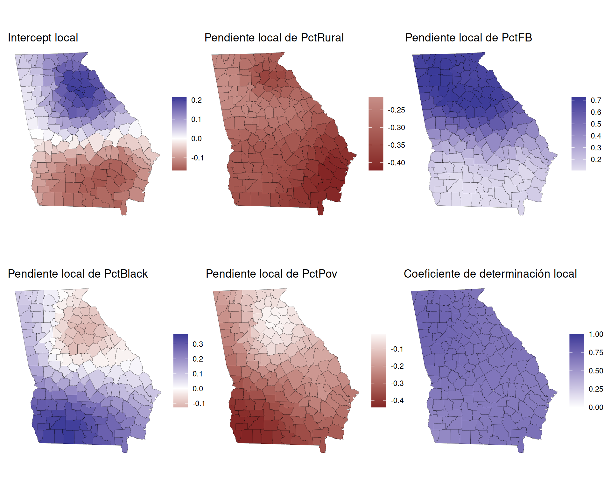
Modelo local: \(y_i = \beta_0(s_i) + \sum_{j=1}^{k} \beta_j(s_i) x_{ij} + \varepsilon_i\)
Los 4 coeficientes varían en el espacio, pero no de la misma forma: algunos cambian mucho de un condado a otro, otros son casi constantes.
El R² local también varía, GWR ajusta mejor en unos condados que en otros.
Adelanto
Todos estos coeficientes se estimaron con el mismo bandwidth. En el Día 3 volvemos sobre este mismo ajuste: ¿todas las variables necesitan la misma escala espacial?
Fundamentos de GWR
¿Autocorrelación o no estacionariedad?
lm()asume errores independientes y estacionariedad de los coeficientes (relación global).Variogramas o Moran’s I diagnostican autocorrelación de errores, no que la relación sea constante en el espacio
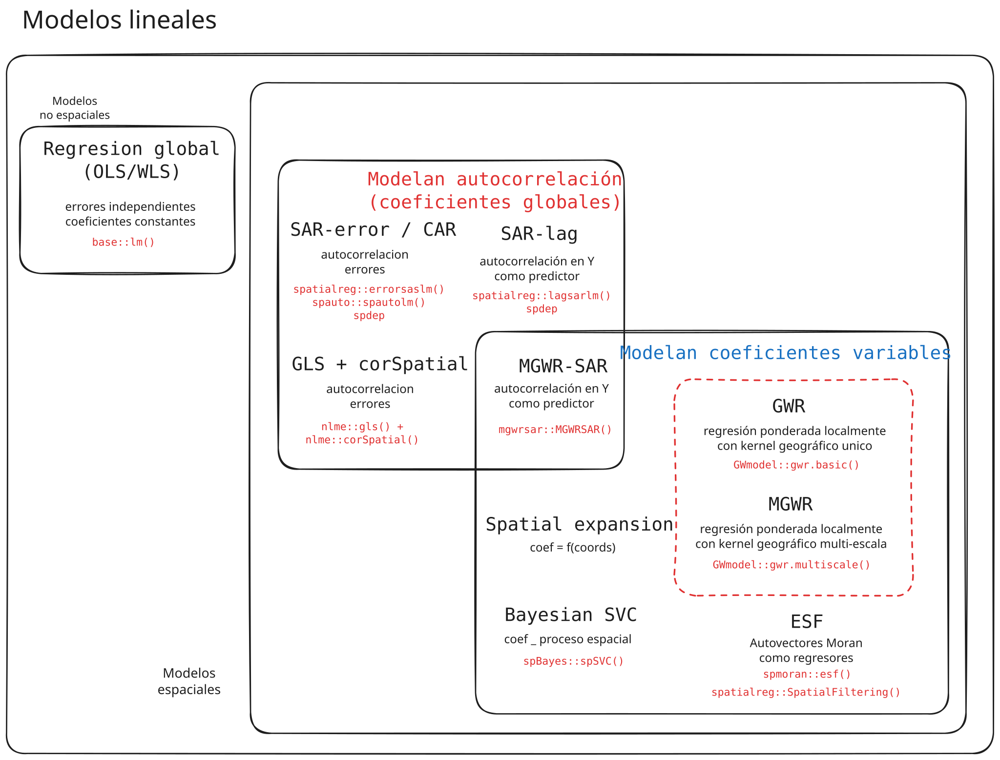
Del modelo global al modelo local
OLS global
\[y_i = \beta_0 + \sum_{j=1}^{k} \beta_j x_{ij} + \varepsilon_i\]
Coeficientes \(\beta_j\) constantes.
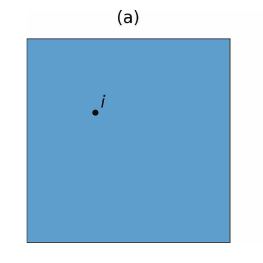
GWR
\[y_i = \beta_0(s_i) + \sum_{j=1}^{k} \beta_j(s_i) x_{ij} + \varepsilon_i\]
Coeficientes \(\beta_j(s_i)\) indexados por la ubicación \(s_i = (u_i, v_i)\) del punto \(i\)
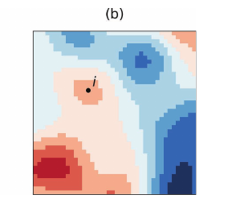
un modelo de regresión por cada ubicación
Visualización esquemática: OLS vs. GWR
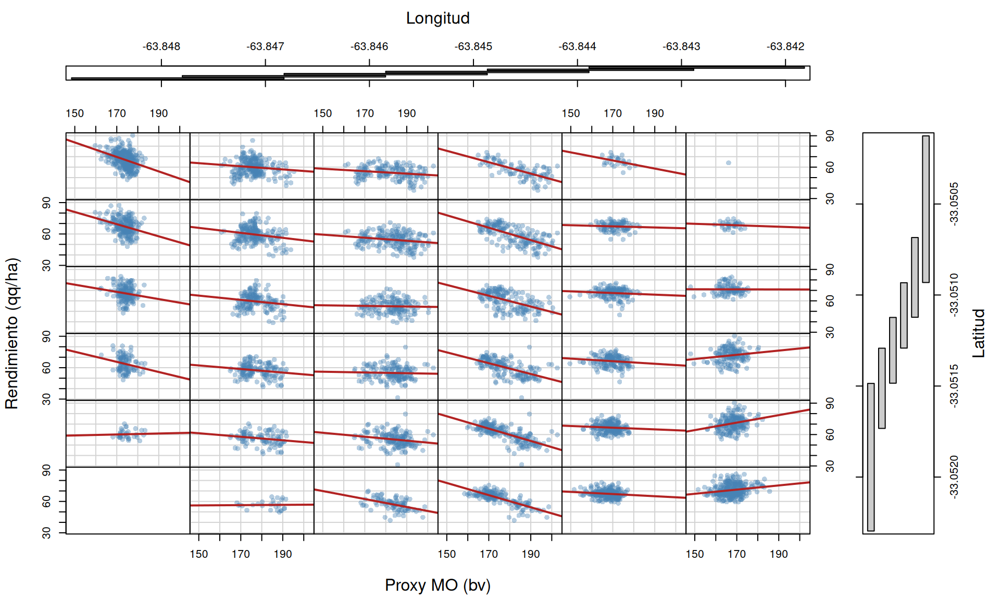
Regresión ponderada localmente
OLS global
\[\hat{\boldsymbol{\beta}} = \left( \mathbf{X}^T \mathbf{X} \right)^{-1} \mathbf{X}^T \mathbf{y}\]
Una sola solución usando todas las observaciones con igual peso.
GWR (en cada ubicación \(s_i\))
\[ \hat{\boldsymbol{\beta}}(s_i) = \left( \mathbf{X}^T \mathbf{W}_i \mathbf{X} \right)^{-1} \mathbf{X}^T \mathbf{W}_i \mathbf{y} \]
donde \(\mathbf{W}_i\) es una matriz diagonal \(m \times m\) de pesos espaciales, específica para el punto \(i\):
\[\mathbf{W}_i = \text{diag}(w_{i1}, w_{i2}, \dots, w_{im})\]
Cada observación \(i'\) pesa según su distancia al punto de calibración \(i\): cuanto más cerca, más peso.
El kernel espacial
El peso \(w_{ii'}\) se define con una función kernel, decreciente en la distancia \(d_{ii'}\) entre \(s_i\) y \(s_{i'}\), y regulada por un bandwidth \(bw\).
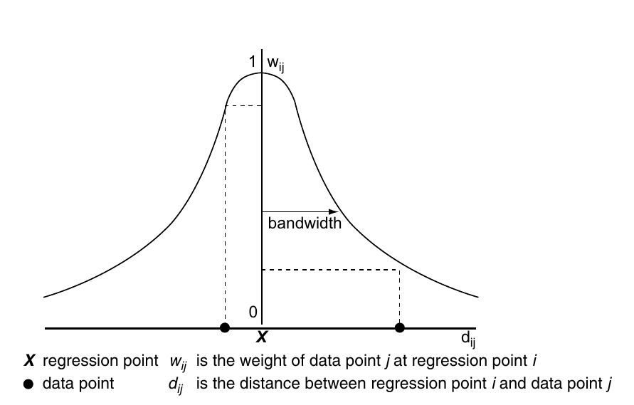
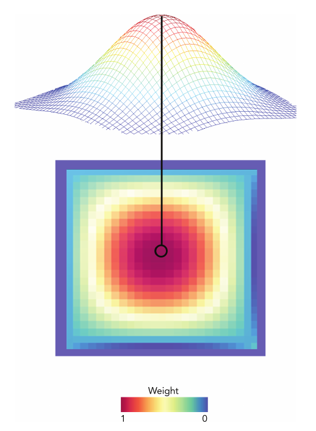
Formas de kernel
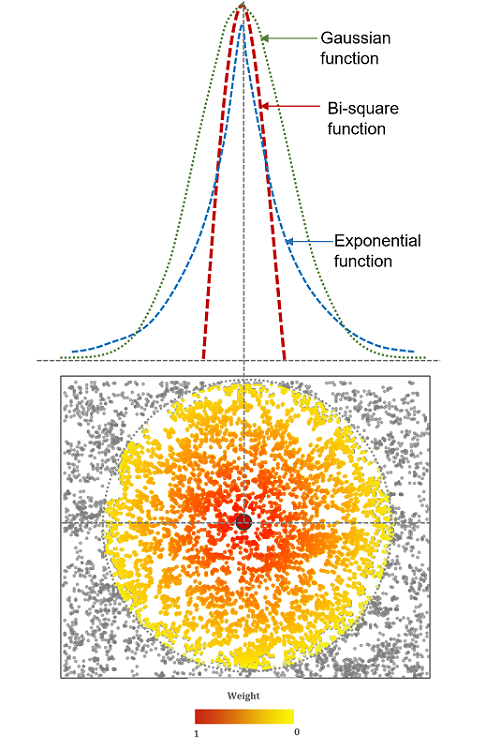
Kernel exponencial (continuo):
\[w(s_i, s_{i'}) = \exp\left[-\dfrac{d(s_i,s_{i'})}{bw(s_i)}\right]\]
Kernel gaussiano (continuo):
\[w(s_i, s_{i'}) = \exp\left(-\dfrac{1}{2}\left(\dfrac{d(s_i, s_{i'})}{bw(s_i)}\right)^2\right)\]
Kernel bi-cuadrático (compacto, bisquare):
\[w(s_i,s_{i'}) = \begin{cases} \left[1-\left(\dfrac{d(s_i,s_{i'})}{bw(s_i)}\right)^2\right]^2 & d(s_i,s_{i'}) < bw(s_i) \\ 0 & d(s_i,s_{i'}) \geq bw(s_i) \end{cases}\]
Bandwidth fijo vs. adaptativo
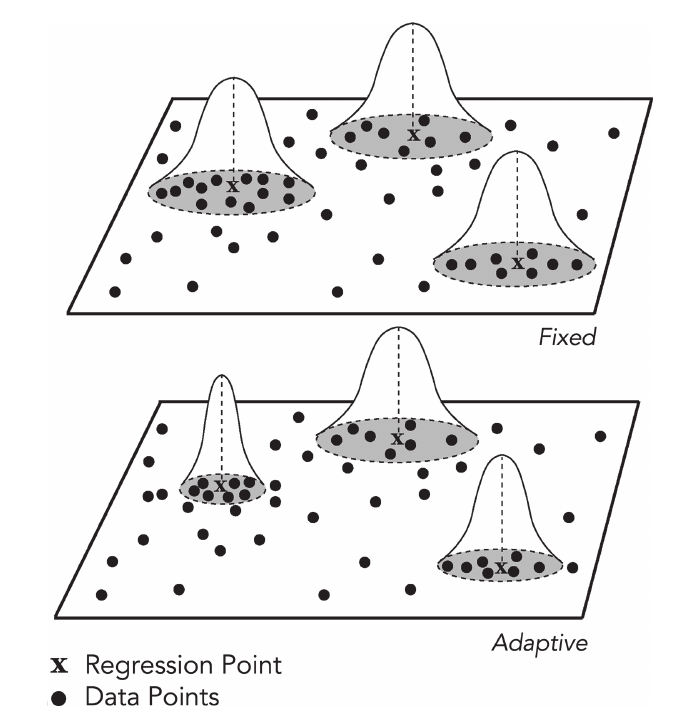
Fijo o basado en distancia
- Radio de búsqueda fijo en todo el área de interés.
- Interpretación directa en unidades de distancia (m, km)
- Aplicable cuando la densidad de puntos es homogénea.
- Riesgo de desbalance en número de observaciones
Adaptativo, basado en el número de vecinos cercanos
- Interpretación más difícil o menos intuitiva
- Se ajusta a la densidad de puntos y áreas irregulares
- Mantiene número constante de observaciones, pesos según distancia
Selección del bandwidth
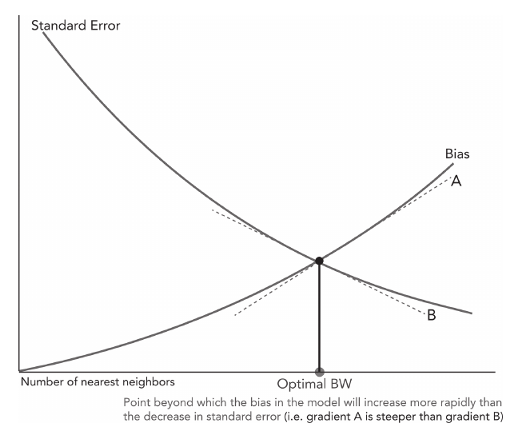
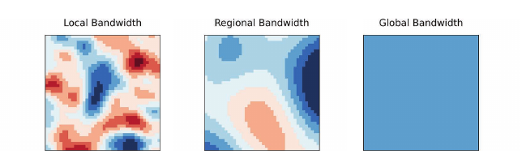
Trade-off central de GWR:
Si \(bw\) es chico
- Modelo muy local
- Alta varianza: menos observaciones para estimar los coeficientes.
- Mayor riesgo de sobreajuste
- Autocorrelación modelada como heterogeneidad de coeficientes
Si \(bw\) grande
- Modelo más suave
- Se acerca al OLS global
- Subajuste de la variación local
- Autocorrelación queda en los residuos
Se puede optimizar
- AICc: penaliza la complejidad (gl efectivos)
- CV: minimiza el error de predicción
GWR más allá de R
GWmodel no es la única implementación de GWR en R.
R
spgwr: paquete basado ensp, más liviano, menos funciones.GWmodel3: nueva generación deGWmodel, no disponible en CRAN todavía.
Python
mgwr(ecosistemapysal).
Standalone
GWR4(standalone): software histórico de Fotheringham/Charlton.
Integrado a GIS
- ArcGIS: herramienta Geographically Weighted Regression nativa.
- QGIS: plugin de GWR.
Cómo ajustar GWR en R
Entornos de trabajo
El dataset: Las Rosas, 1999
agridat::lasrosas.corn: monitor de rendimiento de un lote de maíz con nitrógeno variable (Las Rosas, Río Cuarto, Córdoba). Puntos espaciados ~9.8 m dentro y entre franjas.
- n = 1738 observaciones (subset año 1999, de 3443 totales, incluyendo 2001)
- Variable respuesta (Y):
yield: rendimiento de maíz (qq/ha) - Variable explicativa (X):
bv: brightness value, proxy (inverso) de materia orgánica del suelo, derivado de imagen aérea/satelital

Cargar y explorar los datos
Rows: 1,738
Columns: 8
$ year <int> 1999, 1999, 1999, 1999, 1999, 1999, 1999, 1999, 1999, 1999, 1…
$ yield <dbl> 72.14, 73.79, 77.25, 76.35, 75.55, 70.24, 76.17, 69.17, 69.77…
$ nitro <dbl> 131.5, 131.5, 131.5, 131.5, 131.5, 131.5, 131.5, 131.5, 131.5…
$ topo <fct> W, W, W, W, W, W, W, W, W, W, W, W, W, W, W, W, W, W, W, W, W…
$ bv <dbl> 162.60, 170.49, 168.39, 176.68, 171.46, 170.56, 172.94, 171.8…
$ rep <fct> R1, R1, R1, R1, R1, R1, R1, R1, R1, R1, R1, R1, R1, R1, R1, R…
$ nf <fct> N5, N5, N5, N5, N5, N5, N5, N5, N5, N5, N5, N5, N5, N5, N5, N…
$ geometry <POINT [m]> POINT (420747.3 6342724), POINT (420753.9 6342723), POI…Seleccionar el bandwidth
gwr.basic() y bw.gwr() acepta objetos sf, o Spatial*DataFrame.
Take a cup of tea and have a break, it will take a few minutes.
-----A kind suggestion from GWmodel development group
Adaptive bandwidth (number of nearest neighbours): 1081 AICc value: 11405.18
Adaptive bandwidth (number of nearest neighbours): 676 AICc value: 10956.08
Adaptive bandwidth (number of nearest neighbours): 424 AICc value: 10764.33
Adaptive bandwidth (number of nearest neighbours): 270 AICc value: 10684.13
Adaptive bandwidth (number of nearest neighbours): 173 AICc value: 10634.01
Adaptive bandwidth (number of nearest neighbours): 115 AICc value: 10573.19
Adaptive bandwidth (number of nearest neighbours): 77 AICc value: 10497.62
Adaptive bandwidth (number of nearest neighbours): 55 AICc value: 10442.92
Adaptive bandwidth (number of nearest neighbours): 40 AICc value: 10402.24
Adaptive bandwidth (number of nearest neighbours): 32 AICc value: 10423.23
Adaptive bandwidth (number of nearest neighbours): 46 AICc value: 10434.19
Adaptive bandwidth (number of nearest neighbours): 37 AICc value: 10412.66
Adaptive bandwidth (number of nearest neighbours): 42 AICc value: 10411.3
Adaptive bandwidth (number of nearest neighbours): 38 AICc value: 10404.98
Adaptive bandwidth (number of nearest neighbours): 40 AICc value: 10402.24 El bandwidth optimizado
Ajustar el modelo GWR
***********************************************************************
* Package GWmodel *
***********************************************************************
Program starts at: 2026-10-09 16:48:54.5153
Call:
gwr.basic(formula = yield ~ bv, data = lr1999, bw = bw_bv, kernel = kernel,
adaptive = ad)
Dependent (y) variable: yield
Independent variables: bv
Number of data points: 1738
***********************************************************************
* Results of Global Regression *
***********************************************************************
Call:
lm(formula = formula, data = data)
Residuals:
Min 1Q Median 3Q Max
-26.6149 -4.8232 0.0283 4.6619 27.8223
Coefficients:
Estimate Std. Error t value Pr(>|t|)
(Intercept) 166.1340 3.7481 44.33 <2e-16 ***
bv -0.5833 0.0215 -27.13 <2e-16 ***
---Significance stars
Signif. codes: 0 '***' 0.001 '**' 0.01 '*' 0.05 '.' 0.1 ' ' 1
Residual standard error: 7.428 on 1736 degrees of freedom
Multiple R-squared: 0.2978
Adjusted R-squared: 0.2974
F-statistic: 736.1 on 1 and 1736 DF, p-value: < 2.2e-16
***Extra Diagnostic information
Residual sum of squares: 95773.17
Sigma(hat): 7.427576
AIC: 11906.3
AICc: 11906.32
BIC: 10207.07
***********************************************************************
* Results of Geographically Weighted Regression *
***********************************************************************
*********************Model calibration information*********************
Kernel function: bisquare
Adaptive bandwidth: 40 (number of nearest neighbours)
Regression points: the same locations as observations are used.
Distance metric: Euclidean distance metric is used.
****************Summary of GWR coefficient estimates:******************
Min. 1st Qu. Median 3rd Qu. Max.
Intercept -220.119441 22.089946 59.883374 103.010940 307.4234
bv -1.407641 -0.201978 0.028229 0.234599 1.6264
************************Diagnostic information*************************
Number of data points: 1738
Effective number of parameters (2trace(S) - trace(S'S)): 276.6506
Effective degrees of freedom (n-2trace(S) + trace(S'S)): 1461.349
AICc (GWR book, Fotheringham, et al. 2002, p. 61, eq 2.33): 10402.24
AIC (GWR book, Fotheringham, et al. 2002,GWR p. 96, eq. 4.22): 10140.84
BIC (GWR book, Fotheringham, et al. 2002,GWR p. 61, eq. 2.34): 9721.89
Residual sum of squares: 30943.38
R-square value: 0.7731151
Adjusted R-square value: 0.7301337
***********************************************************************
Program stops at: 2026-10-09 16:48:54.771999 Explorando el objeto SDF
Rows: 1,738
Columns: 13
$ Intercept <dbl> 40.2710181, 43.0065700, 49.8453616, 64.2816986, 86.55063…
$ bv <dbl> 0.19671512, 0.18097484, 0.14138114, 0.05687493, -0.07494…
$ y <dbl> 72.14, 73.79, 77.25, 76.35, 75.55, 70.24, 76.17, 69.17, …
$ yhat <dbl> 72.25690, 73.86097, 73.65253, 74.33036, 73.69985, 73.379…
$ residual <dbl> -0.11689688, -0.07097005, 3.59746852, 2.01963934, 1.8501…
$ CV_Score <dbl> 0, 0, 0, 0, 0, 0, 0, 0, 0, 0, 0, 0, 0, 0, 0, 0, 0, 0, 0,…
$ Stud_residual <dbl> -0.03135450, -0.01625733, 0.83655909, 0.52135072, 0.4241…
$ Intercept_SE <dbl> 38.63512, 37.96984, 39.46250, 42.77210, 51.41071, 64.950…
$ bv_SE <dbl> 0.2271130, 0.2227701, 0.2310590, 0.2497762, 0.2989196, 0…
$ Intercept_TV <dbl> 1.04234216, 1.13265068, 1.26310707, 1.50288850, 1.683513…
$ bv_TV <dbl> 0.86615543, 0.81238377, 0.61188335, 0.22770356, -0.25073…
$ Local_R2 <dbl> 0.8094432, 0.8321277, 0.8527897, 0.8682821, 0.8710910, 0…
$ geometry <POINT [m]> POINT (420747.3 6342724), POINT (420753.9 6342723)…SDFtiene 1738 filas (una por punto de calibración) y 12 columnas (sin contargeometry).Variables:
Intercept,bv: coeficientes locales \(\beta_0(s_i)\), \(\beta_1(s_i)\)y,yhat: valor observado y ajustado localmenteresidual:y - yhatCV_Score: residuo de validación cruzadaStud_residual: residuo estudentizado*_SE: error estándar de cada coeficiente local*_TV: estadístico t de cada coeficiente localLocal_R2: bondad de ajuste local
Distribución de coeficientes y R² local
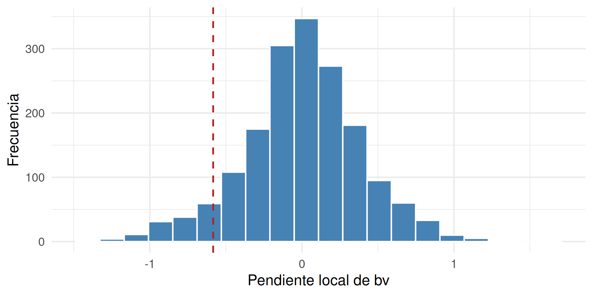
Repaso
Regresión global asume relaciones constantes en el espacio; en algunos escenarios eso puede no ser realista
Un paso intermedio (SAR/CAR) corrige autocorrelación en los residuos, pero sigue dando un único set de coeficientes
GWR estima un modelo distinto en cada ubicación, ponderando observaciones cercanas vía un kernel y un bandwidth
El bandwidth se optimiza (AICc o CV), no se elige a mano
Con varios predictores (Georgia), GWR usa un único bandwidth para todas las variables, ¿alcanza?
Se ajustó un modelo GWR sobre Las Rosas, falta explorarlo (diagnóstico)